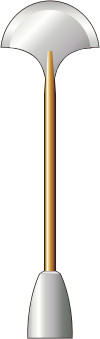

Lirpa |
|
||||
|  |
Tradizionale arma bianca vulcaniana costituita da una barra di
metallo con ad un'estremità una lama a forma di ventaglio e all'altra
estremità un contrappeso.
Viene usata dai due avversari nel kal-if-fee, una sfida rituale che
può essere richiesta durante il pon-farr per la scelta del compagno.
Nel 2154 i soldati inviati dall'Alto Consiglio Vulcaniano alla ricerca
di Archer e T'Pol, erano armati di lirpa poiché le armi ad energia
erano inefficaci nella regione di Vulcano della Fornace.